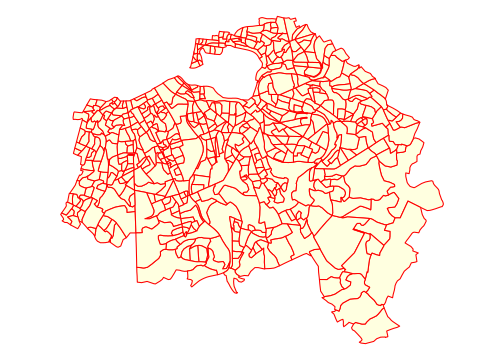
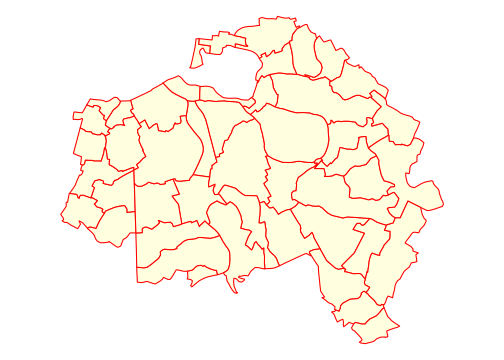
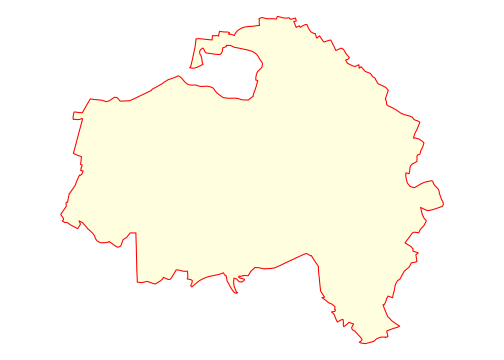
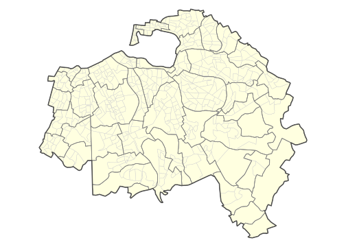

Chapitre 1 Préparation des données (CG)
Attaching package: 'data.table'The following objects are masked from 'package:dplyr':
between, first, lastThe following object is masked from 'package:purrr':
transposeLinking to GEOS 3.8.1, GDAL 3.1.4, PROJ 6.3.11.1 Introduction
L’objectif du projet Data Mining 2021 consistera à étudier les inégalités sociales et spatiales dans le département du Val de Marne à partir des données du dernier recensement de population de 2017. Ces inégalités seront envisagées à différentes échelles ce qui impliquera des procédures d’agrégation des fichiers détails.
1.2 Données statistiques sur les individus
Nous partirons des fichiers détail de l’INSEE car, à la différence des tableaux prédéfinis, ils permettent virtuellement toutes les formes de croisement d’indicateurs. Ils sont évidemment beaucoup plus volumineux, mais ce sera justement l’occasion pour les étudiants en data mining d’être confrontés à des problèmes d’optimisation et de big data. On trouve leur description détaillée sur le site de l’INSEE dans la page consacrée au recensement :
https://www.insee.fr/fr/statistiques/4508161
Nous avons opté pour le fichier des individus localisés au canton-ou-ville qui présente une grande polyvalence d’usage puisqu’il permet de reconstituer des tableau agrégés ou l’unité de compte peut-être soit le ménage, soit l’individu selon le critère de pondération adopté.
1.2.1 Etape 1 : téléchargement des données et stockage temporaire
Nous allons télécharger ici le fichier des données pour la région Ile-de-France au format .csv et l’enregistrer dans un dossier spécial tmp qui pourra ulétérieurement être détruit ou déplacé afin de libérer de la place
N.B. Ce programme qui prend quelques minutes sera exécuté une seule fois. On ajoutera ensuite dans l’en-tête du chunk eval=FALSE ce qui veut dire que ce bloc de code ne sera plus executé automatiquement lorsqu’on réalise un knit du document Rmd. Il sera néanmoins toujours possible de l’executer manuellement en cliquant sur sa petite flèche verte.
### Téléchargement du fichier INSEE
download.file(url="https://www.insee.fr/fr/statistiques/fichier/4802064/RP2017_INDCVIZA_csv.zip",
destfile = "tmp/indiv2017.zip")
## Decompression du fichier INSEE
unzip(zipfile = "tmp/indiv2017.zip",
exdir = "tmp")
## Examen du contenu
list.files("tmp")Nous constatons que le document zippé contenait en fait deux fichiers différents
Le fichier de données individuelles FD_INDCVIZA_2017.csv : qui pèse au bas mot 1014.3 Mo (1 Giga) et dont nous verrons par la suite qu’il comporte 4.3 millions de lignes et 88 colonnes.
Le fichier de métadonnées varmod_INDCVI_2017.csv : qui ne pèse que 1.8 Mo et comprend la description précise du label de chacune des modalités de variables.
1.2.2 Etape 2 : Transformation des données au format R
L’importation d’un tableau aussi gros (4.3 millions de lignes et 88 colonnes) donne l’occasion de faire quelques tests de vitesses sur les différents packages capables de lire des fichiers .csv.
Nous allons pour cela utiliser la fonction Sys.time()qui permet de repérer l’heure au début et à la fin d’une action. Les résultats dépendront évidemment de la vitesse de l’ordinateur. Il s’agit ici d’un MacBook Pro 2.9 Ghz, disposant de 4 coeurs et 16 Go de mémoire.
1.2.2.1 Chargement avec la fonction read.csv
- Avec la fonction
read.csvui fait partie du R-base , le temps de chargement est de 150 secondes. Le tableau résultant est de classe data.frame puisque nous avons utilisé une fonction native de R-base
1.2.2.2 Chargement avec la fonction read_csv2
- avec la fonction
read_csv2du package readr, le chargement est effectué en 59 secondes sur le même ordinateur. Le tableau résultant garde la classe data.frame mais est aussi un tibble puisque le package readr fait partie de l’écosystème tibble/tidyverse. Le temps de chrgement est donc divisé par deux.
1.2.2.3 Chargement avec la fonction fread
- avec la fonction
freaddu package data.table, le chargement est effectué en 31 secondes sur le même ordinateur.Le tableau résultant conserve la classe data.frame mais possède aussi la classe data.table puisque la fonction fread est issue de ce package. Le temps est divisé encore une fois par deux.
library(data.table)
t1<-Sys.time()
tab<-fread("tmp/FD_INDCVIZA_2017.csv")
t2<-Sys.time()
paste ("chargement effectué en",t2-t1, "secondes")
dim(tab)
class(tab)On voit donc que le temps de chargement peut différer fortement selon le choix des packages. Il en va ensuite de même pour les traitements d’agrégation des données qui seront plus ou moins rapides selon que l’on utilise les fonctions de R-base applicables à un data.frame, celles du package tidyverse applicables à un tibble ou enfin celles du package data.table applicables à un data.table.
1.2.3 Etape 3 : Sélection des données utiles et sauvegarde au format .Rdata
Nos différentes tableaux peuvent être enregistés au format interne de .R ce qui réduira considérablement leur taille par rapport au fichier texte au format csv qui pèse 1.06 Go. Nous allons également limiter la taille du document en ne conservant que les données qui nous intéressent, en l’occurence celles du département du Val de Marne.
Comme ces données bvont nous servir durant tout le projet, elles seront stockées dans le dossier data situé à l’intérieur du projet et non pas dans le dossier tmp qui sera détruit si l’on n’en a plus besoin pour libérer de la place.
- N.B. On ramène l’objet à la classe d’objet unique data.frame pour éviter des conflits possibles entre package. On pourra toujours le retransformer ensuite en data.table ou en tibble.
## Chargement avec fread (+ rapide)
tab<-fread("tmp/FD_INDCVIZA_2017.csv")
## Suppression de la classe data.table
tab<-as.data.frame(tab)
## Selection des données relatives au Val de Marne
sel <- tab %>% filter(DEPT == 94)
## Vérification des dimensions du tableau
dim(sel)
## Sauvegarde au format RDS
saveRDS(object = sel,
file = "data/indiv2017.Rdata")On peut effectuer de façon facultative une sauvegarde au format .csv ce qui évitera des problème d’ouverture du fichier .Rdata pour les personnes ayant des versions anciennes de R. Mais du coup cela engendrera un fichier très volumineux (200 Mo).
## Sauvegarde au format CSV (facultatif)
write.table(x=sel,
file = "data/indiv2017.csv",
sep=";",
dec = ".",
fileEncoding = "UTF-8")1.2.3.1 Etape 4 : Chargement et sauvegarde des méta-données
Il ne faut surtout pas oublier le fichier des métadonnées qui va permettre de recoder facilement tous les facteurs et de décoder les chiffres correspondant aux classes. On va donc le transformer au format R puis l’enregistrer également dans le dossier data.
1.3 Données statistiques sur les logements ordinaires
Nous allons reproduire sans les commenter de façon aussi détaillée les mêmes étapes que précédemment pour construire un fichier des logements ordinaires dont la description se trouve à l’adresse suivante :
https://www.insee.fr/fr/statistiques/4802056?sommaire=4508161
1.3.1 Etape 1 : récupération des fichiers
### Téléchargement du fichier INSEE
download.file(url="https://www.insee.fr/fr/statistiques/fichier/4802056/RP2017_LOGEMTZA_csv.zip",
destfile = "tmp/logmt2017.zip")
## Decompression du fichier INSEE
unzip(zipfile = "tmp/logmt2017.zip",
exdir = "tmp")
## Examen du contenu
list.files("tmp")Comme dans le cas du fichier des individus, on trouve un fichier des données et un fichier des métadonnées qu’il faut tous les deux récupérer.
1.3.2 Etape 2 : Transformation des données au format R
On utilise la fonction fread du package data.table qui est la plus rapide
1.3.3 Etape 3 : Sélection des données utiles et sauvegarde au format .Rdata
On remet le tableau au format standard data.frame , on sélectionne la zone d’étude et on sauvegarde au format .Rdata.
N.B Comme la variable DEPT n’existe pas on utilise les deux premiers chiffres du code de la variable COMMUNE pour la créer
## Suppression de la classe data.table
tab<-as.data.frame(tab)
## Selection des données relatives au Val de Marne
sel <- tab %>% mutate(DEPT = substr(COMMUNE,1,2)) %>%
filter(DEPT == "94")
## Vérification des dimensions du tableau
dim(sel)
## Sauvegarde au format RDS
saveRDS(object = sel,
file = "data/logmt2017.Rdata")1.3.3.1 Etape 4 : Chargement et sauvegarde des méta-données
Comme dans le cas des logements, on sauvegarde précieusement le fichier des métadonnées.
1.4 Données géométriques
Les contours des unités spatiales correspondant aux codes de l’INSEE sont produits par l’IGN et disponibles sur le site géoservice en accès libre :
https://geoservices.ign.fr/documentation/diffusion/telechargement-donnees-libres.html
1.4.1 Etape 1 : récupération du fonds IRIS au format shapefile
La principale difficulté est de s’orienter dans l’ensemble des produits disponibles. Dans l’exemple présent, nous cherchhons le contour des IRIS, c’est-à-dire des entités infra-communales correspondant au découpage utilisé lors du recensement de 2017. Comme précédemment, nous allons stocker le résultat du téléchargement dans notre fichier tmp qui sera détruit ou déplacé lorsque nous aurons récupéré toutes les données utiles.
download.file(url="https://wxs.ign.fr/1yhlj2ehpqf3q6dt6a2y7b64/telechargement/inspire/CONTOURS-IRIS-2017-06-30%24CONTOURS-IRIS_2-1__SHP__FRA_2017-06-30/file/CONTOURS-IRIS_2-1__SHP__FRA_2017-06-30.7z",
destfile = "tmp/geom.7z")Il n’est apparemment pas possible de décompresser le fichier avec la fonction unzip de R, donc on effectue cette opération manuellement. Il en résulte une arborescence très complexe de dossiers et de sous-dossiers correspondant aux IRIS de la Francé métropolitaine mais aussi de chacun des DOM. Il faut alors aller repérer dans cet arborescence le dossier où se trouve le fonds IRIS de la France métropolitaine qui est au format shapefile et comporte plusieurs fichiers avec des extensions différentes.
list.files("tmp/CONTOURS-IRIS_2-1__SHP__FRA_2017-06-30/CONTOURS-IRIS/1_DONNEES_LIVRAISON_2016/CONTOURS-IRIS_2-1_SHP_LAMB93_FE-2016")[1] "CONTOURS-IRIS.cpg" "CONTOURS-IRIS.dbf" "CONTOURS-IRIS.prj"
[4] "CONTOURS-IRIS.shp" "CONTOURS-IRIS.shx" "LISTE.csv" 1.4.2 Etape 2 : Importation et transformation au format sf
La cartographie et plus généralement les opérations géométriques sur des données spatiales dans R peuvent facilement être effectuées avec le package sf (spatial features) qui crée des objets ubniques rassemblant à la fois
- un tableau de données (l’équivalent du fichier .dbf)
- une géométrie (l’équivalent du fichier .shp)
- une projection (l’équivalent du fichier .prj)
Lorsqu’on récupère des fonds de carte au format shapefile (.shp) ou dans d’autres formats standards comme GeoJson, la première tâche consiste donc à les convertir au formt sf afin de pouvoir les utiliser facilement dans R. L’importation se fait à l’aide de l’instruction st_read en indiquant juste le nom du fichier .shp à charger. Les autres fichiers (.dbf ou .proj) seront lus également et intégrés dans l’objet qui hérite de la double classe data.frame et sf
library(sf)
map <- st_read("tmp/CONTOURS-IRIS_2-1__SHP__FRA_2017-06-30/CONTOURS-IRIS/1_DONNEES_LIVRAISON_2016/CONTOURS-IRIS_2-1_SHP_LAMB93_FE-2016/CONTOURS-IRIS.shp")Reading layer `CONTOURS-IRIS' from data source `/Users/claudegrasland1/Documents/cg/cours/2020_M2_MECI_Datamining/DataMiningProject2021/tmp/CONTOURS-IRIS_2-1__SHP__FRA_2017-06-30/CONTOURS-IRIS/1_DONNEES_LIVRAISON_2016/CONTOURS-IRIS_2-1_SHP_LAMB93_FE-2016/CONTOURS-IRIS.shp' using driver `ESRI Shapefile'
Simple feature collection with 49404 features and 6 fields
Geometry type: MULTIPOLYGON
Dimension: XY
Bounding box: xmin: 99040 ymin: 6049662 xmax: 1242445 ymax: 7110479
Projected CRS: RGF93_Lambert_93[1] 49404 7[1] "sf" "data.frame"# A tibble: 2 x 7
INSEE_COM NOM_COM IRIS CODE_IRIS NOM_IRIS TYP_IRIS geometry
<chr> <chr> <chr> <chr> <chr> <chr> <MULTIPOLYGON [m]>
1 72191 Mayet 0000 721910000 Mayet Z (((498083.5 6747517, 4981…
2 77248 Lesches 0000 772480000 Lesches Z (((685753.1 6868613, 6857…1.4.3 Etape 3 : Extraction des IRIS de la zone d’étude
Le fichier comporte près de 50 000 unités spatiales qui correspondent soit à des communes suffisamment grandes pour être découpées en IRIS, soit à des communes non découpées. On reconnaît ces dernières au fait que leur code IRIS se termine par ‘00000’.
Supposons qu’on veuille extraire le fonds de carte du Val de Marne. On va commencer par créer une variable DEPT en extrayant les dxeux premiers caractères du code communal, puis on va sélectionner le départements correspondant :
[1] 527 8[1] "sf" "data.frame"# A tibble: 2 x 8
INSEE_COM NOM_COM IRIS CODE_IRIS NOM_IRIS TYP_IRIS geometry
<chr> <chr> <chr> <chr> <chr> <chr> <MULTIPOLYGON [m]>
1 94021 Chevil… 0107 940210107 Sorbiers H (((652774.3 6853051, 652…
2 94068 Saint-… 0204 940680204 Le Vieu… H (((662096.5 6856264, 662…
# … with 1 more variable: DEPT <chr>Le nouveau tableau ne comporte plus que 2749 unités spatiales et 8 colonnes au lieu de 7 puisqu’ l’on a ajouté une colonne DEPT. On peut visualiser le résultat à l’aide de la fonction geom_sfdu package ggplot2 :

On sauvegarde le résultat dans notre dossier data au format interne de R :
On peut également effectuer (de façon facultative) une sauvegarde au format shapefile afin de pouvoir réutiliser le fonds de carte à l’aide d’autres applications externes à R.
1.4.4 Etape 4 : création d’un fonds de carte des communes
Comme nous serons amenés à travailler à plusieurs échelles, nous produisons tout de suite un fonds de carte des communes en utilisant les fonctions d’agrégation du packages sf combinées avec celles de dplyr.
`summarise()` ungrouping output (override with `.groups` argument)on vérifie que l’agrégation s’est bien passée :
 Et on sauvegarde le fonds de carte
1.4.5 Etape 5 : création d’un fonds de carte par département
Enfin, on construit un fonds de carte des départements selon la même procédure :
map_dep <- map_iris %>% mutate(DEPT = substr(INSEE_COM,1,2))%>%
group_by(DEPT) %>%
summarise() %>%
st_as_sf()`summarise()` ungrouping output (override with `.groups` argument)
1.4.6 Etape 6: Superposition des trois fonds de carte
On va utiliser la fonction plot du package sf qui permet de visualiser la variable geometry et facilite les superpositions avec l’instruction add=TRUE.
par(mar=c(0,0,0,0))
plot(map_iris$geometry, col= "lightyellow", border = "gray80", lwd=0.5)
plot(map_com$geometry, col= NA, border = "gray50", lwd=1, add=TRUE)
plot(map_dep$geometry, col= NA, border = "gray30", lwd=2, add=TRUE)
1.5 Bilan et nettoyage
Nous avons désormais un dossier data qui comporte :
- Le fichier des individus et ses métadonnées
- Le fichier des logements ordinaires et ses métadonnées
- Les fonds de carte par iris, commune et département.
[1] "bpe2019_94_map.Rdata" "bpe2019_94.csv" "bpe2019_meta.csv"
[4] "indiv_2017_meta.Rdata" "indiv2017_meta.Rdata" "indiv2017.Rdata"
[7] "logmt2017_meta.Rdata" "logmt2017.Rdata" "map_com.Rdata"
[10] "map_dep.Rdata" "map_iris.Rdata" "map_VOIT_IRIS.Rdata"
[13] "mapdon_94068.Rdata" "mapdon_94071.Rdata" "sel_map_act_csp.Rdata"
[16] "sel_map_men_auto.Rdata" "sel_map_men_csp.Rdata" "sel_map_pop_csp.Rdata"
[19] "sel_map_pop_hlm.Rdata" "VOIT_IRIS.Rdata" On peut alors décider de détruire le dossier tmp qui contient des dossiers très volumineux et pas forcément indispensables.